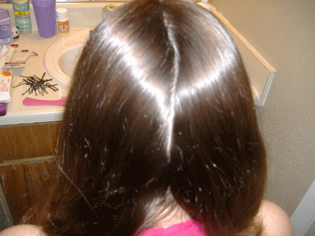
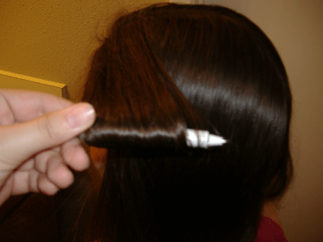
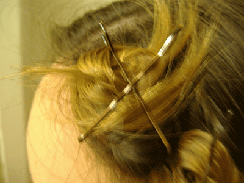
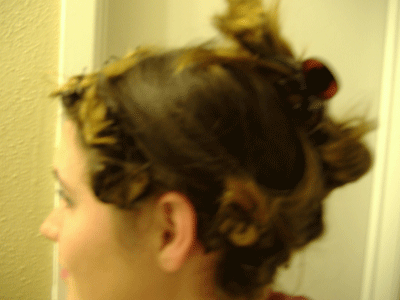
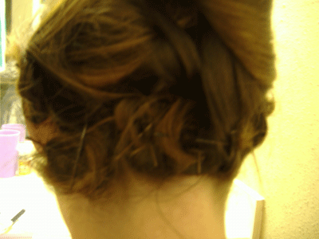
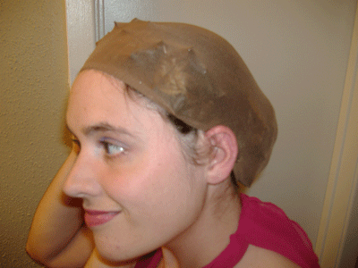
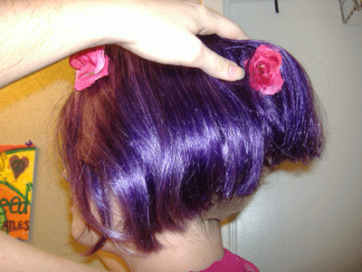
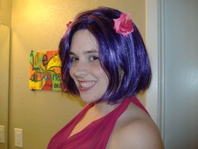

Step One: Prepare the Hair
Everyone has seen it--that one cosplayer with the beautifully crafted garment, the meticulous make-up, the props that took hours to sculpt and the elaborate turquoise up-do of their favorite character--with a tendril of blond hair snaking out from under the wig to ruin the hard-won effect. Anyone who has worn a wig knows how much of a headache
(literally) it can be to shove even a normal-length head of hair under a wig, yet people in plays and movies do it all the time. The pin-curl method of hair setting for a wig is a tried and true professional costuming secret that even a novice cosplayer can achieve with a few simple
tools and a bit of patience.
Besides a willing accomplice, the ingredients are cheap: a box of bobby pins, a wig cap, a comb and some
styling gel are all it takes. After you gather the materials, but before you start, you should put on any
parts of your costume that you need to pull over your head or else this will all be in vain. Then, comb the wig-wearer's hair out smooth with a comb or brush,
then part it along the back from ear to ear.

Step Two: Make Curls
Starting at one ear, take a 1- inch section of hair and brush it out straight. Wrap the end around the
lipstick case (A fat marker or dowel rod are also good substitutes) and roll the case towards the head
until all the hair is curled up. Slide the curl off of the dowel rod and lay the curl flat on the head, and then use two bobby pins to secure it tightly.
The bobby pins should make an X over the curl.


Step Three: Work Around the Crown
Next, work your way along the base of the neck, pin curling 1-inch sections as close to the hairline as possible. The idea is to create a crown of pin
curls around the edge of the hairline for the wig cap to cling to. Be sure to make each pin curl as flat as possible, or else the ends of the bobby pins
will poke up through the wig! Once one side of the head is done, do the same for the other side.

Step Four: Secure Leftover Hair
Now the wig-wearer should have a crown of pin curls around the head and a lot of loose hair in the middle
of the head. If the hair is long, braid all the loose hair and pin it in a flat bun in the middle of the
head. If the hair is very short, then you can just leave it be. If you are feeling
particularly bored or ambitious, and you have enough bobby pins left, you can pin curl the entire head.

Step Five: Put on Wig Cap
Next stretch the wig cap over the pin curls. The wig-wearer can help at this point by holding it down in
the front while the accomplice pulls it tight over the rest of the head. It's ok if a few bobby pins stick through the cap. Use some styling gel to smooth any wisps of hair under the cap also. Then accomplice
should take a picture of the wig-wearer for blackmail, because the wig-wearer will look incredibly silly.

Step Six: Put on Wig
Finally, it's time for the wig. Place the front of the wig on the wig-wearer's head, catching the pins
on the netting inside the wig. Carefully stretch the wig over the crown of pin curls, behind the ears and
over the nape of the neck. Fasten any catches on the wig and make any last minute wig-styling touch ups.

The End!
And you're ready! Enjoy your wig, your costume, and anything else you want to do!

Thanks a billion to Tiffany for being my model for this tutorial!
Back to Wigs